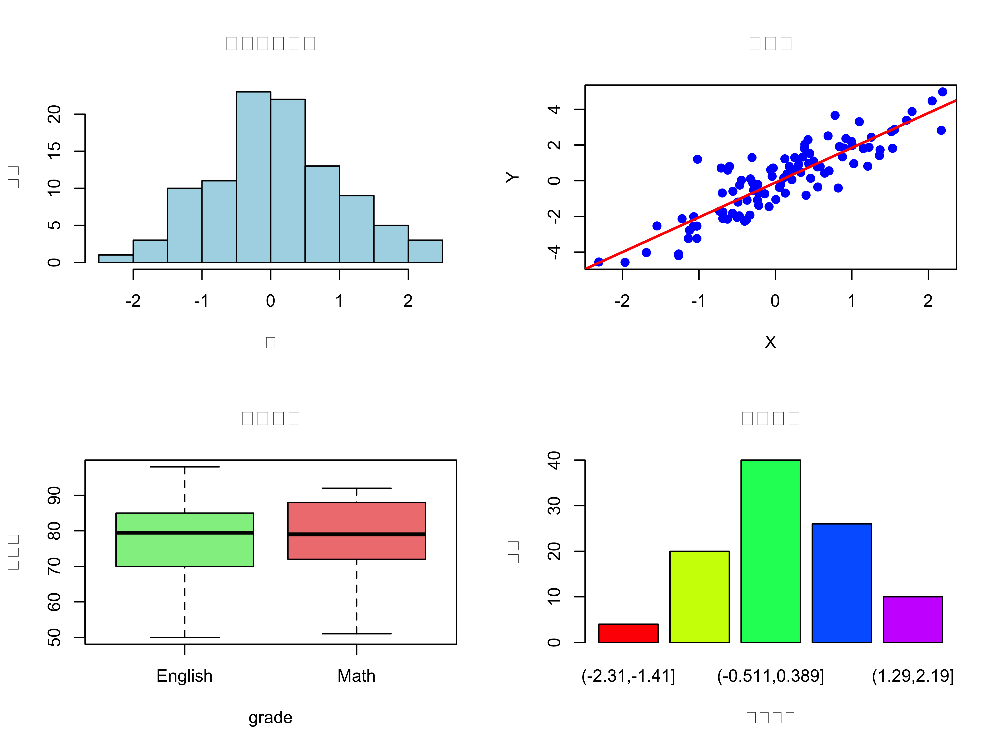
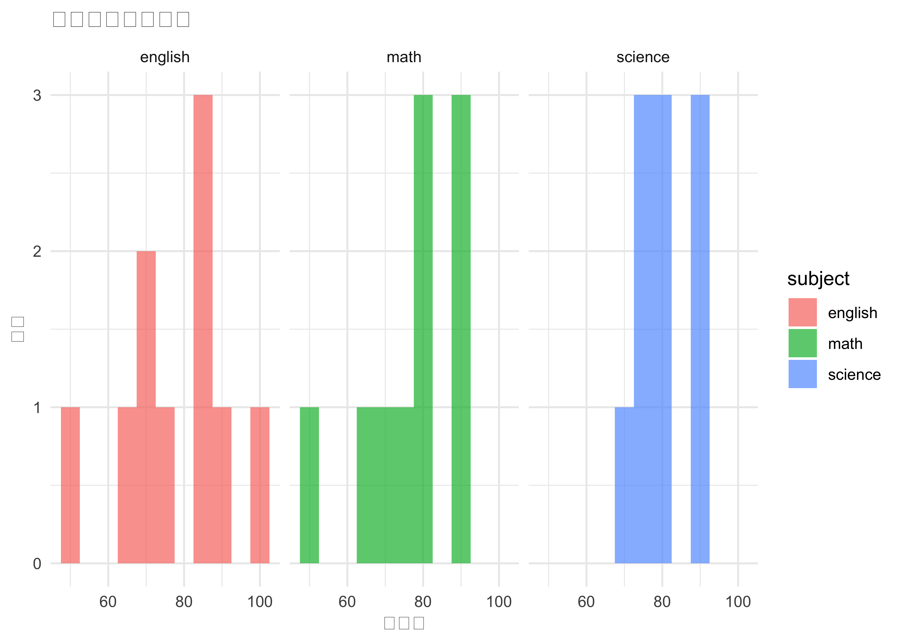
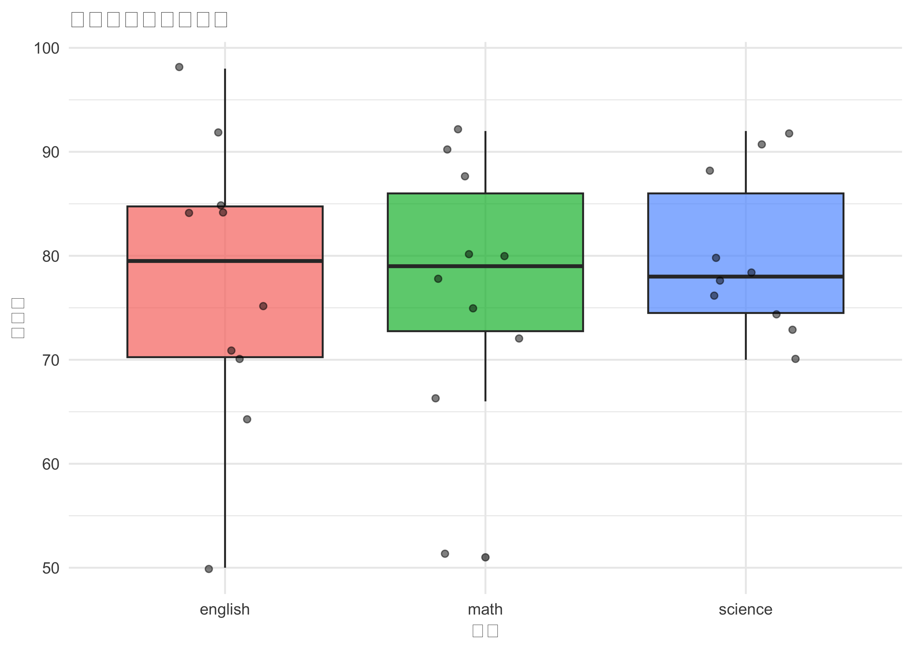
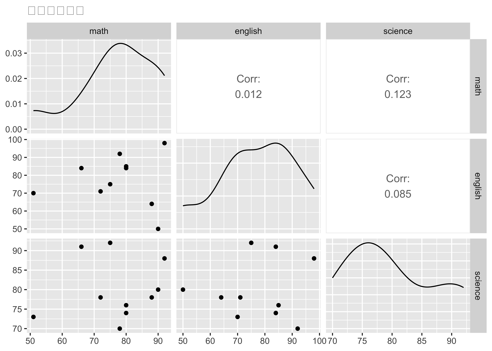

コードを表示
# 四則演算
1 + 2[1] 3コードを表示
10 - 3[1] 7コードを表示
4 * 5[1] 20コードを表示
20 / 4[1] 5コードを表示
# べき乗
2^3[1] 8コードを表示
sqrt(16)[1] 4RはCRAN (Comprehensive R Archive Network) から無料でダウンロードできます。
RStudioは、Rを使いやすくする統合開発環境（IDE）です。
RStudioは4つのペインで構成されています：
# 四則演算
1 + 2[1] 310 - 3[1] 74 * 5[1] 2020 / 4[1] 5# べき乗
2^3[1] 8sqrt(16)[1] 4# 代入演算子 <- を使用
x <- 10
y <- 20
z <- x + y
z[1] 30# = も使えるが、<- が推奨
a = 5 # 動作するが非推奨
b <- 5 # 推奨Rには主に以下のデータ型があります：
# 数値（numeric）
age <- 25
class(age)[1] "numeric"# 文字列（character）
name <- "田中太郎"
class(name)[1] "character"# 論理値（logical）
is_student <- TRUE
class(is_student)[1] "logical"# 因子（factor）
gender <- factor(c("男", "女", "男", "女"))
class(gender)[1] "factor"levels(gender)[1] "女" "男"最も基本的なデータ構造です。同じ型の要素を持つ1次元配列です。
# 数値ベクトル
scores <- c(85, 90, 78, 92, 88)
scores[1] 85 90 78 92 88# 文字列ベクトル
names <- c("Alice", "Bob", "Charlie", "David")
names[1] "Alice" "Bob" "Charlie" "David" # 連続した数値の生成
1:10 [1] 1 2 3 4 5 6 7 8 9 10seq(from = 0, to = 100, by = 10) [1] 0 10 20 30 40 50 60 70 80 90 100rep(1:3, times = 3)[1] 1 2 3 1 2 3 1 2 32次元の配列です。
# 3×3の行列を作成
mat <- matrix(1:9, nrow = 3, ncol = 3)
mat [,1] [,2] [,3]
[1,] 1 4 7
[2,] 2 5 8
[3,] 3 6 9# 行名・列名の設定
rownames(mat) <- c("Row1", "Row2", "Row3")
colnames(mat) <- c("Col1", "Col2", "Col3")
mat Col1 Col2 Col3
Row1 1 4 7
Row2 2 5 8
Row3 3 6 9# 要素へのアクセス
mat[2, 3] # 2行3列の要素[1] 8mat[2, ] # 2行目全体Col1 Col2 Col3
2 5 8 mat[, 3] # 3列目全体Row1 Row2 Row3
7 8 9 異なる型の列を持つことができる表形式のデータ構造です。統計解析で最もよく使います。
# データフレームの作成
students <- data.frame(
id = 1:5,
name = c("田中", "佐藤", "鈴木", "高橋", "渡辺"),
score = c(85, 90, 78, 92, 88),
pass = c(TRUE, TRUE, FALSE, TRUE, TRUE),
stringsAsFactors = FALSE
)
students id name score pass
1 1 田中 85 TRUE
2 2 佐藤 90 TRUE
3 3 鈴木 78 FALSE
4 4 高橋 92 TRUE
5 5 渡辺 88 TRUE# データフレームの構造を確認
str(students)'data.frame': 5 obs. of 4 variables:
$ id : int 1 2 3 4 5
$ name : chr "田中" "佐藤" "鈴木" "高橋" ...
$ score: num 85 90 78 92 88
$ pass : logi TRUE TRUE FALSE TRUE TRUE# 要約統計量
summary(students) id name score pass
Min. :1 Length:5 Min. :78.0 Mode :logical
1st Qu.:2 Class :character 1st Qu.:85.0 FALSE:1
Median :3 Mode :character Median :88.0 TRUE :4
Mean :3 Mean :86.6
3rd Qu.:4 3rd Qu.:90.0
Max. :5 Max. :92.0 # 列へのアクセス
students$score[1] 85 90 78 92 88students[, "score"][1] 85 90 78 92 88students[["score"]][1] 85 90 78 92 88# 行の選択
students[students$score > 80, ] id name score pass
1 1 田中 85 TRUE
2 2 佐藤 90 TRUE
4 4 高橋 92 TRUE
5 5 渡辺 88 TRUE異なる型・構造のオブジェクトを格納できる柔軟なデータ構造です。
# リストの作成
my_list <- list(
numbers = 1:5,
text = "Hello",
matrix = matrix(1:4, 2, 2),
dataframe = students[1:2, ]
)
my_list$numbers
[1] 1 2 3 4 5
$text
[1] "Hello"
$matrix
[,1] [,2]
[1,] 1 3
[2,] 2 4
$dataframe
id name score pass
1 1 田中 85 TRUE
2 2 佐藤 90 TRUE# リスト要素へのアクセス
my_list$numbers[1] 1 2 3 4 5my_list[[1]][1] 1 2 3 4 5my_list[["matrix"]] [,1] [,2]
[1,] 1 3
[2,] 2 4# CSVファイルの読み込み
data <- read.csv("data.csv", header = TRUE, stringsAsFactors = FALSE)
# tidyverseのreadrパッケージを使う方法（推奨）
library(readr)
data <- read_csv("data.csv")
# CSVファイルの書き出し
write.csv(data, "output.csv", row.names = FALSE)
write_csv(data, "output.csv")# readxlパッケージのインストール
install.packages("readxl")
library(readxl)
# Excelファイルの読み込み
data <- read_excel("data.xlsx", sheet = 1)
# openxlsxパッケージで書き出し
install.packages("openxlsx")
library(openxlsx)
write.xlsx(data, "output.xlsx")# RDS形式で保存（単一のオブジェクト）
saveRDS(students, "students.rds")
# RDS形式の読み込み
students_loaded <- readRDS("students.rds")
# RData形式で保存（複数のオブジェクト）
save(students, scores, file = "mydata.RData")
# RData形式の読み込み
load("mydata.RData")# インストール（初回のみ）
# install.packages("tidyverse")
# パッケージの読み込み
library(tidyverse)# サンプルデータの作成
exam_data <- data.frame(
student_id = 1:10,
name = paste0("Student", 1:10),
math = round(rnorm(10, 75, 10)),
english = round(rnorm(10, 70, 12)),
science = round(rnorm(10, 80, 8))
)
exam_data student_id name math english science
1 1 Student1 80 84 74
2 2 Student2 66 84 91
3 3 Student3 51 70 73
4 4 Student4 88 64 78
5 5 Student5 72 71 78
6 6 Student6 78 92 70
7 7 Student7 92 98 88
8 8 Student8 75 75 92
9 9 Student9 90 50 80
10 10 Student10 80 85 76# select：列の選択
exam_data %>%
select(name, math, english) name math english
1 Student1 80 84
2 Student2 66 84
3 Student3 51 70
4 Student4 88 64
5 Student5 72 71
6 Student6 78 92
7 Student7 92 98
8 Student8 75 75
9 Student9 90 50
10 Student10 80 85# filter：行の絞り込み
exam_data %>%
filter(math > 75) student_id name math english science
1 1 Student1 80 84 74
2 4 Student4 88 64 78
3 6 Student6 78 92 70
4 7 Student7 92 98 88
5 9 Student9 90 50 80
6 10 Student10 80 85 76# mutate：新しい列の作成
exam_data %>%
mutate(
total = math + english + science,
average = total / 3
) student_id name math english science total average
1 1 Student1 80 84 74 238 79.33333
2 2 Student2 66 84 91 241 80.33333
3 3 Student3 51 70 73 194 64.66667
4 4 Student4 88 64 78 230 76.66667
5 5 Student5 72 71 78 221 73.66667
6 6 Student6 78 92 70 240 80.00000
7 7 Student7 92 98 88 278 92.66667
8 8 Student8 75 75 92 242 80.66667
9 9 Student9 90 50 80 220 73.33333
10 10 Student10 80 85 76 241 80.33333# arrange：並び替え
exam_data %>%
mutate(total = math + english + science) %>%
arrange(desc(total)) student_id name math english science total
1 7 Student7 92 98 88 278
2 8 Student8 75 75 92 242
3 2 Student2 66 84 91 241
4 10 Student10 80 85 76 241
5 6 Student6 78 92 70 240
6 1 Student1 80 84 74 238
7 4 Student4 88 64 78 230
8 5 Student5 72 71 78 221
9 9 Student9 90 50 80 220
10 3 Student3 51 70 73 194# group_by & summarize：グループ集計
exam_data %>%
mutate(
average = (math + english + science) / 3,
grade = ifelse(average >= 75, "A", "B")
) %>%
group_by(grade) %>%
summarize(
n = n(),
mean_score = mean(average),
sd_score = sd(average)
)# A tibble: 2 × 4
grade n mean_score sd_score
<chr> <int> <dbl> <dbl>
1 A 7 81.4 5.14
2 B 3 70.6 5.10# パイプを使わない場合（読みにくい）
result1 <- arrange(
mutate(
filter(exam_data, math > 70),
total = math + english + science
),
desc(total)
)
# パイプを使う場合（読みやすい）
result2 <- exam_data %>%
filter(math > 70) %>%
mutate(total = math + english + science) %>%
arrange(desc(total))
# 結果は同じ
all.equal(result1, result2)[1] TRUE# サンプルデータ
set.seed(123)
x <- rnorm(100)
y <- 2 * x + rnorm(100)
# レイアウトの設定（2×2のグリッド）
par(mfrow = c(2, 2))
# ヒストグラム
hist(x, main = "ヒストグラム", xlab = "値", ylab = "頻度", col = "lightblue")
# 散布図
plot(x, y, main = "散布図", xlab = "X", ylab = "Y", pch = 19, col = "blue")
abline(lm(y ~ x), col = "red", lwd = 2)
# 箱ひげ図
boxplot(math ~ grade,
data = data.frame(
math = c(exam_data$math, exam_data$english),
grade = rep(c("Math", "English"), each = 10)
),
main = "箱ひげ図", ylab = "スコア", col = c("lightgreen", "lightcoral"))
# 棒グラフ
barplot(table(cut(x, breaks = 5)),
main = "棒グラフ", xlab = "カテゴリ", ylab = "頻度",
col = rainbow(5))
par(mfrow = c(1, 1)) # レイアウトをリセット# データの準備
exam_long <- exam_data %>%
pivot_longer(cols = c(math, english, science),
names_to = "subject",
values_to = "score")
# ヒストグラム
ggplot(exam_long, aes(x = score, fill = subject)) +
geom_histogram(binwidth = 5, alpha = 0.7, position = "identity") +
facet_wrap(~ subject) +
theme_minimal() +
labs(title = "科目別スコア分布",
x = "スコア",
y = "頻度")
# 箱ひげ図
ggplot(exam_long, aes(x = subject, y = score, fill = subject)) +
geom_boxplot(alpha = 0.7) +
geom_jitter(width = 0.2, alpha = 0.5) +
theme_minimal() +
labs(title = "科目別スコアの比較",
x = "科目",
y = "スコア") +
theme(legend.position = "none")
# 散布図行列
library(GGally)
ggpairs(exam_data[, c("math", "english", "science")],
title = "科目間の相関")
# CRANからインストール
install.packages("ggplot2")
# 複数パッケージを一度にインストール
install.packages(c("dplyr", "tidyr", "readr"))
# パッケージの読み込み
library(ggplot2)
# インストールされているか確認してから読み込む
if (!require(ggplot2)) {
install.packages("ggplot2")
library(ggplot2)
}
# パッケージの更新
update.packages()
# パッケージ情報の確認
packageVersion("ggplot2")
sessionInfo()| カテゴリ | パッケージ | 用途 |
|---|---|---|
| データ操作 | dplyr, tidyr |
データの整形・変換 |
| 可視化 | ggplot2, plotly |
グラフ作成 |
| 統計解析 | car, emmeans |
統計検定 |
| 読み込み | readr, readxl |
データ読み込み |
| レポート | knitr, rmarkdown |
文書作成 |
# 現在の作業ディレクトリを確認
getwd()
# 作業ディレクトリの変更
setwd("~/Documents/MyProject")
# プロジェクト構造の例
# MyProject/
# ├── data/ # 生データ
# ├── R/ # Rスクリプト
# ├── output/ # 出力結果
# ├── figures/ # 図表
# └── MyProject.Rproj # プロジェクトファイルsessionInfo()で環境情報を保存renvパッケージで環境を固定# セッション情報の記録
sessionInfo()R version 4.5.0 (2025-04-11)
Platform: aarch64-apple-darwin20
Running under: macOS Sequoia 15.6
Matrix products: default
BLAS: /Library/Frameworks/R.framework/Versions/4.5-arm64/Resources/lib/libRblas.0.dylib
LAPACK: /Library/Frameworks/R.framework/Versions/4.5-arm64/Resources/lib/libRlapack.dylib; LAPACK version 3.12.1
locale:
[1] en_US.UTF-8/en_US.UTF-8/en_US.UTF-8/C/en_US.UTF-8/en_US.UTF-8
time zone: Asia/Tokyo
tzcode source: internal
attached base packages:
[1] stats graphics grDevices utils datasets methods base
other attached packages:
[1] GGally_2.3.0 lubridate_1.9.4 forcats_1.0.0 stringr_1.5.1
[5] dplyr_1.1.4 purrr_1.1.0 readr_2.1.5 tidyr_1.3.1
[9] tibble_3.3.0 ggplot2_3.5.2 tidyverse_2.0.0
loaded via a namespace (and not attached):
[1] gtable_0.3.6 jsonlite_2.0.0 compiler_4.5.0 tidyselect_1.2.1
[5] ggstats_0.10.0 scales_1.4.0 yaml_2.3.10 fastmap_1.2.0
[9] R6_2.6.1 labeling_0.4.3 generics_0.1.4 knitr_1.50
[13] htmlwidgets_1.6.4 pillar_1.11.0 RColorBrewer_1.1-3 tzdb_0.5.0
[17] rlang_1.1.6 utf8_1.2.6 stringi_1.8.7 xfun_0.52
[21] S7_0.2.0 timechange_0.3.0 cli_3.6.5 withr_3.0.2
[25] magrittr_2.0.3 digest_0.6.37 grid_4.5.0 rstudioapi_0.17.1
[29] hms_1.1.3 lifecycle_1.0.4 vctrs_0.6.5 evaluate_1.0.4
[33] glue_1.8.0 farver_2.1.2 codetools_0.2-20 rmarkdown_2.29
[37] tools_4.5.0 pkgconfig_2.0.3 htmltools_0.5.8.1 以下のタスクを実行してください：
# 解答例
even_numbers <- seq(2, 100, by = 2)
mean(even_numbers)[1] 51median(even_numbers)[1] 51sd(even_numbers)[1] 29.15476sum(even_numbers >= 80)[1] 11以下の学生データを作成し、tidyverseを使って分析してください：
# 解答例
students <- data.frame(
name = c("A", "B", "C", "D", "E"),
math = c(85, 72, 90, 68, 88),
english = c(78, 85, 82, 90, 75),
science = c(92, 78, 88, 85, 90)
)
library(tidyverse)
# 1. 平均点80以上
students %>%
mutate(average = (math + english + science) / 3) %>%
filter(average >= 80) name math english science average
1 A 85 78 92 85.00000
2 C 90 82 88 86.66667
3 D 68 90 85 81.00000
4 E 88 75 90 84.33333# 2. 各科目の平均
students %>%
summarize(
math_mean = mean(math),
english_mean = mean(english),
science_mean = mean(science)
) math_mean english_mean science_mean
1 80.6 82 86.6# 3. ランキング
students %>%
mutate(
total = math + english + science,
rank = rank(-total)
) %>%
arrange(rank) name math english science total rank
1 C 90 82 88 260 1
2 A 85 78 92 255 2
3 E 88 75 90 253 3
4 D 68 90 85 243 4
5 B 72 85 78 235 5